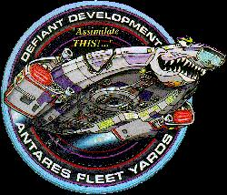

Flotta Stellare - Classe Defiant |
|
|
|  |
In base alla direttiva 138.6 della Flotta Stellare ed allo statuto del Consiglio Generale di Sicurezza, la Classe Defiant venne costruita per soddisfare i seguenti requisiti:
Categoria: Nave scorta.
Capacità: 40 membri di equipaggio, 150 persone come limite massimo in
caso di evacuazione di emergenza.
Motori: Nucleo a curvatura con due gondole, due sistemi ad impulso.
Nucleo a curvatura miniaturizzato con cristalli di keltrinio al posto del
dilitio. Il motore della classe Defiant non produce effetti alla
struttura del subspazio.
Velocità massima: Warp 9,982 per 12 ore.
| USS Defiant NX-74205 Seconda nave a portare questo nome. La prima della sua classe e l'unica dotata del sistema di occultamento. Distrutta dai Breen. | The Search - Part I, The Changing Face of Evil | |
| USS Defiant NCC-74205 Terza nave a portare questo nome. È la Sao Paulo rinominata. Partecipò alla battaglia finale contro il Dominio. | What you Leave Behind | |
| USS Valiant NCC-74210 Costruita nel Cantiere navale di Antares IV. Seconda nave a portare questo nome. Usata per l'addestramento dei cadetti della Squadra Rossa. Distrutta da una nave da battaglia dei Jem'Hadar. | Valiant | La Valiant è una corazzata inglese della Seconda Guerra Mondiale. Il numero di registro della nave è un 47. |
| USS Sao Paulo NCC-75633 Nel 2375 venne assegnata a Deep Space Nine e rinominata USS Defiant. | The Dogs of War | San Paolo è una città del Brasile. |
| [Senza Nome] (2 navi) Facevano parte del gruppo di inseguimento mandato a recuperare la Prometheus. | Message in a Bottle |
|
||||||||||||||||||